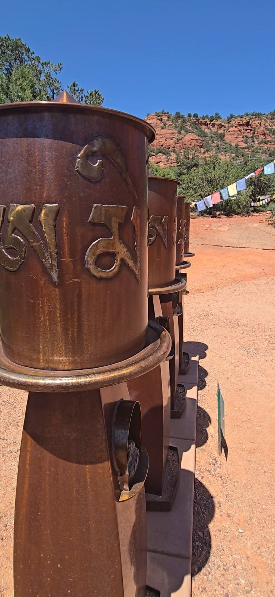

← All Vortex & Spiritual Tours

Most vortex tours ask you to simply believe. The Vortex Odyssey is the one that brings receipts for both worldviews: the spiritual tradition that has drawn seekers to Sedona's energy sites for decades, and the geology and science of the land itself — then lets you stand in the places and judge the feeling for yourself.
With a 4.9 rating across nearly 700 reviews, this is the vortex tour we recommend first, including to skeptics. Reviewers consistently single out the guides — knowledgeable, funny, and respectful of wherever each guest is starting from.